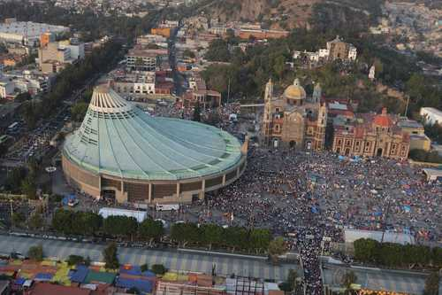
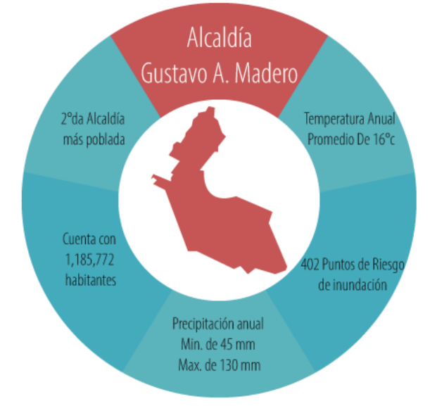

Su nombre actual lo recibió en honor a Gustavo Adolfo Madero, político participante en la Revolución mexicana, hermano de Francisco I. Madero. Anteriormente la zona se conoció como Tepeyac ( en la nariz del cerro) y Guadalupe Hidalgo, debido a las apariciones de la virgen de Guadalupe y en honor a Miguel Hidalgo.
Hoy en día sigue siendo la segunda zona más poblada de Ciudad de México, sólo superada por Iztapalapa. La explanada Gustavo A. Madero se encuentra en el recodo con forma de L que presenta la alcaldía. Comparte ese espacio central con Lindavista y la zona de Indios Verdes.
